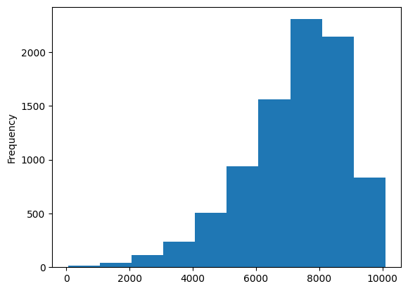
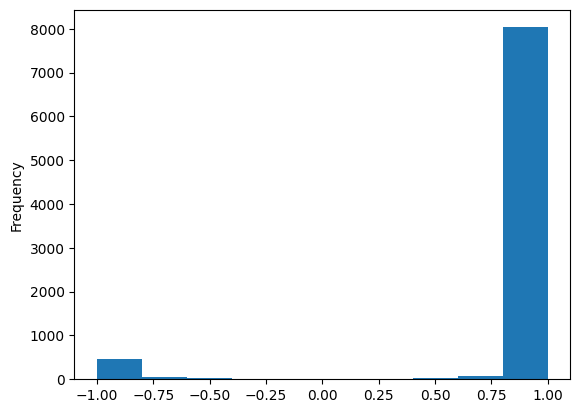

import pandas as pd
import nltk
from nltk.sentiment import SentimentIntensityAnalyzernltk.download('vader_lexicon')[nltk_data] Downloading package vader_lexicon to
[nltk_data] /Commjhub/jupyterhub/home/j3nnajacobs/nltk_data...
[nltk_data] Package vader_lexicon is already up-to-date!Truesid = SentimentIntensityAnalyzer()sid.score_valence?Signature: sid.score_valence(sentiments, text) Docstring: <no docstring> File: /opt/jupyterhub/share/jupyter/venv/python3_comm3180/lib/python3.12/site-packages/nltk/sentiment/vader.py Type: method
sid.polarity_scores('i love it'), sid.polarity_scores('I LOVE IT! :) :)')({'neg': 0.0, 'neu': 0.192, 'pos': 0.808, 'compound': 0.6369},
{'neg': 0.0, 'neu': 0.082, 'pos': 0.918, 'compound': 0.9047})sid.polarity_scores('This is AMAZING and I LOVE LOVE LOVE IT SOOOOO MUCH!!!'){'neg': 0.0, 'neu': 0.229, 'pos': 0.771, 'compound': 0.9726}sid.polarity_scores('This is stupid and bad and VERY CRAP!!!'){'neg': 0.708, 'neu': 0.292, 'pos': 0.0, 'compound': -0.9207}sm_df['posts'].apply(lambda p: len(p)).plot.hist()
sid.polarity_scores(sm_df['posts'][0]){'neg': 0.057, 'neu': 0.832, 'pos': 0.111, 'compound': 0.9816}sm_df = pd.read_csv('data/mbti.csv')
sm_df.shape(8675, 3)sm_df.columnsIndex(['filename', 'type', 'posts'], dtype='str')sm_df.value_counts('type')type
INFP 1832
INFJ 1470
INTP 1304
INTJ 1091
ENTP 685
ENFP 675
ISTP 337
ISFP 271
ENTJ 231
ISTJ 205
ENFJ 190
ISFJ 166
ESTP 89
ESFP 48
ESFJ 42
ESTJ 39
Name: count, dtype: int64sm_df['type'].apply(lambda s: [s[0], s[1], s[2], s[3]])0 [I, N, F, J]
1 [E, N, T, P]
2 [I, N, T, P]
3 [I, N, T, J]
4 [E, N, T, J]
...
8670 [I, S, F, P]
8671 [E, N, F, P]
8672 [I, N, T, P]
8673 [I, N, F, P]
8674 [I, N, F, P]
Name: type, Length: 8675, dtype: objectsm_df['sentiment']=sm_df['posts'].apply(lambda posts: sid.polarity_scores(posts)['compound'])sm_df['sentiment'].plot.hist()
sm_df['type'].str.split('')[0]['', 'I', 'N', 'F', 'J', '']def length_of_post(text):
return len(text)sm_df['posts'].apply(length_of_post)0 4652
1 7053
2 5265
3 6271
4 6111
...
8670 5011
8671 7902
8672 5772
8673 9479
8674 7418
Name: posts, Length: 8675, dtype: int64sm_df['posts'].apply(lambda x: len(x))0 4652
1 7053
2 5265
3 6271
4 6111
...
8670 5011
8671 7902
8672 5772
8673 9479
8674 7418
Name: posts, Length: 8675, dtype: int64